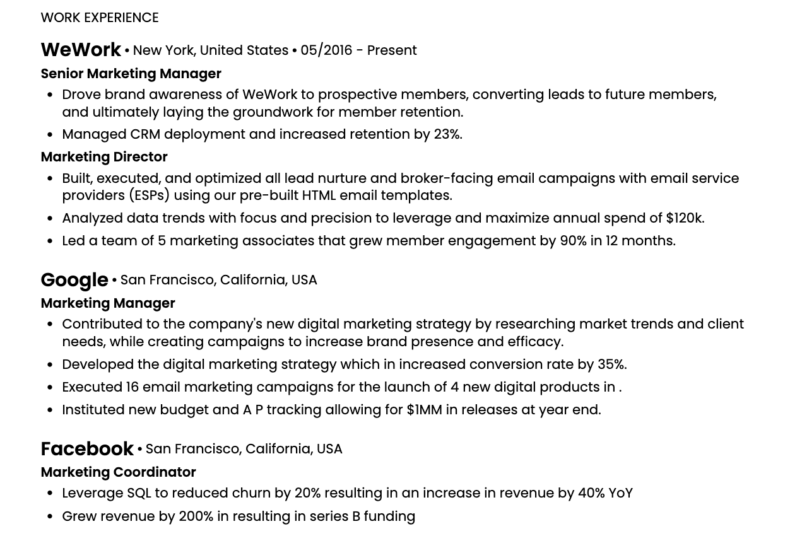
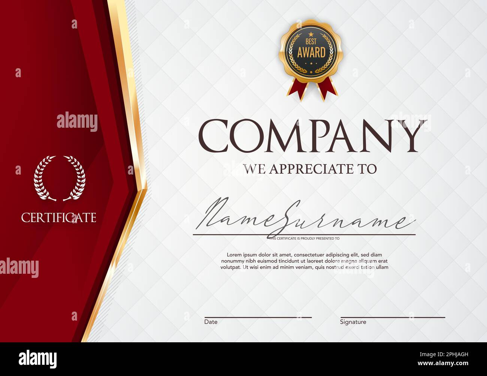
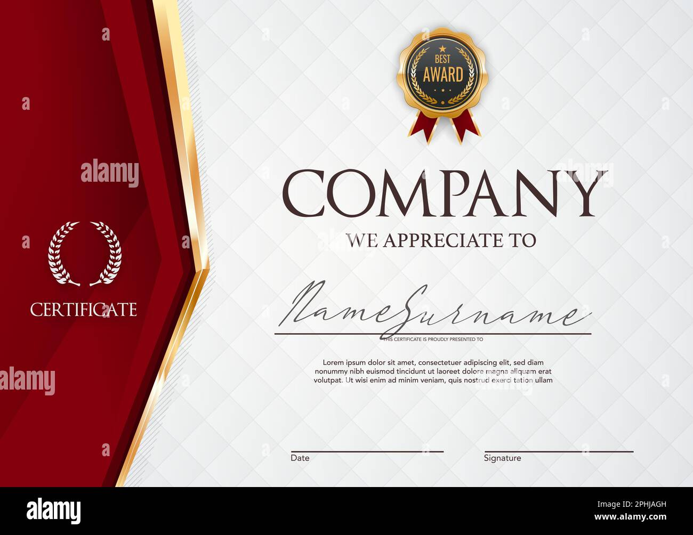
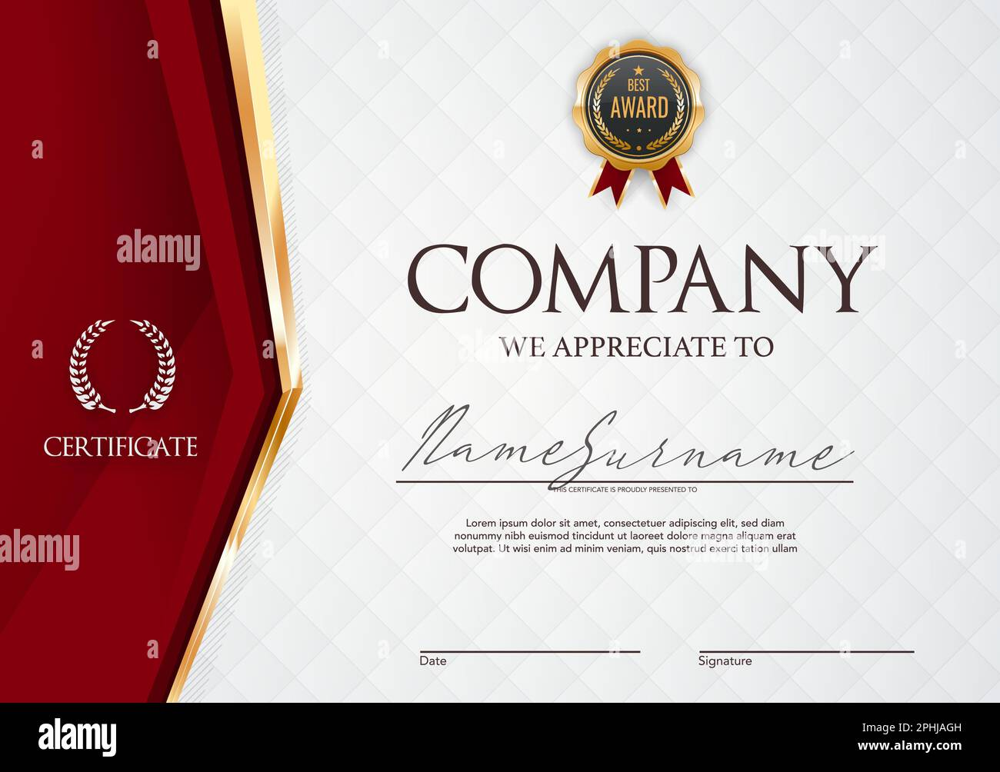

Mina Hiji
My name is Mina Hiji, I'm a first year Pre-Business major. I started UCR Fall quarter of 2023. I attended Westlake Highschool. After I graduate college, I hope to work somewhere in Los Angeles or San Diego with my degree.
I enjoy doing many hobbies in my free time or with friends. Ever since I was 8 I was really interested in piano and I have been playing ever since. I also enjoy baking in my free time for my friends and family or for different type of events. I'm also just generally into music and I listen to a lot of rnb and pop throughout most of my day. I also enjoy playing video games with my friends or cousins. I love my Hometown because it's where my family and school friends are. Some of my fondest memories were attneding the Christmas tree lightings that would happen in the Promenade area near my house. One of the best foods there was this Thai restaurant called Pookies, and they had the best fried rice you could ever have. I really enjoyed the Fall season the most there because the weather wasn't hot and it was starting to get into the colder weather which I prefer. It was also during Halloween time and everyone and every stores would decorate or dress up for the holiday, which was fun. Some cool places I would go to was this park near my elemntary school and me and my friends would hang out and have picnics or have paint dates there. There was also the nearby mall that we would visit and shop at, that also had a movie theatre right next to it.
This is my first year at UCR and so far I've had a lot of fun and I'm so glad that I was able to meet some of my closest friends and roommates here that I'm able to hang out with daily. Compared to when I was back at home I'd have more restrictions but now that I'm here I'm able to have more freedom which I enjoy. I also really like how UCR has so many researching programs and oppurtunitites that allow me to gain internships and experience for my future endeavors. I also really enjoy going to the University Village because they have a lot of different asian foods to get from. My friends and I often go to Afters Ice cream and boba there after our classes!
Experience
President
• Planned social events for the JR YBA Southern California District
• Planned monthly meetings and fundraisers
• Led and worked fundraising events for the community and other churches
Secretary
• Volunteered to play music to the elderly in Senior Residential Homes
• Connected and negotiated with the Directors at several Senior Residential Homes
• Encouraged students to reach out and perform/share their musical talents
Education
UC Riverside
University of California Riverside
Portfolio

 

